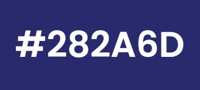
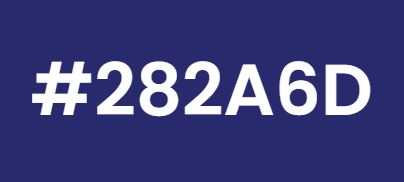
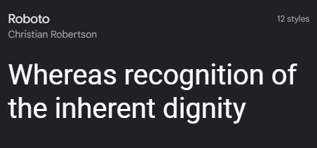
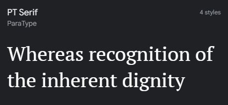

Color Schema
The colors scheme will have a white background with blues and greys.


The colors scheme will have a white background with blues and greys.

I have chosen to use the Roboto font for paragraph typography and PT Serif for heading typography.

